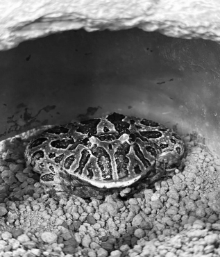

カエルはなぜ
嫌われるのか
高校二年 髙木 詩太
1. はじめに
私はカエルのことが好きだ。特に顔なんかがとてもかわいいとおもっている。しかし、カエルのことを気持ちが悪い、嫌いだという人はたくさんいるだろう。
私の周りにもそういう人はいる。そういう人がいることも理解していたつもりではあるが、先日、友人に見せた自分が一番かわいいと思っているカエルの写真を見せたところ、「気持ち悪い」と言われてしまい、かなりのショックを受けた。そこで、カエルはなぜ嫌われているのかということが気になり、調べてみることにした。

↑実際に見せたカエルの写真
2. ヒトは何を嫌うのか
人の嫌悪感の多くは、感覚から誘発されるらしい。例えば、べちゃべちゃした音や感触がそうだ。生き物の体液のような、こういったものには病原菌や細菌が潜んでいることが多い。そのため、ヒトは嫌悪を感じるようになったのだそうだ。
また、ヒトには嫌悪の共感というものが起きることがある。他人が嫌悪感を表に出したとき、自分もその対象について嫌悪感を抱くようになるという現象だ。これにもヒトは他人と一緒に嫌悪を学習してきたという歴史がある。
このようにして、ヒトは自分に害を及ぼす可能性のあるものを嫌悪し、避けるように進化してきたのだ。
3. カエルが嫌われてしまう理由
カエルが嫌いな理由をネットで検索してみると、ベタベタ・ぬめぬめした質感が嫌い、予測できない動きが怖い、じめじめした場所にいるイメージで汚そうなどという意見が多かった。確かに、ぬめぬめした感じは前述のように体液を連想させるし、動きが予測できないということはそれだけで害を受ける可能性を感じ、嫌悪感につながっているということも理解できる。しかも、すでにカエルは気持ち悪いものだという一般常識のようなものがうっすらと出来上がっているようにも感じる。ここでも嫌悪の共感のようなものが起きているのではないかと思う。
こういった嫌悪感を払拭するのに一番有効なのはやはり、“慣れ”ということらしい。カエルに触れてそこまで危険がないということが分かれば、きっと嫌悪感も消えてくれるだろう。
4. まとめ
カエルが嫌われている理由は、ヒトの本能に起因するものが多い。しかし、それを軽減する方法があるということもわかってくれたと思う。カエルが苦手だという人も、興風祭の展示で実際にカエルに触れてみたり、それも無理だという人はYouTube などで飼育されているカエルの様子を見てみたりするのはどうだろうか。清潔に飼育されているカエルの様子を見れば、その印象も変わるかもしれない。これを読んだ人たちにはぜひ、カエルに対する印象を考え直してみてほしいと思う。
5. 参考文献
レイチェル・ハーツ.『あなたはなぜ「嫌悪感」をいだくのか』.原書房.2012.